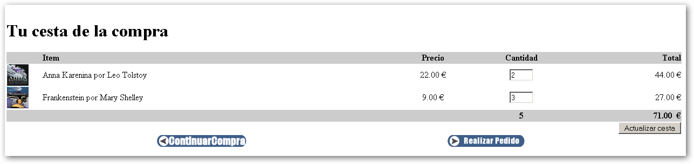
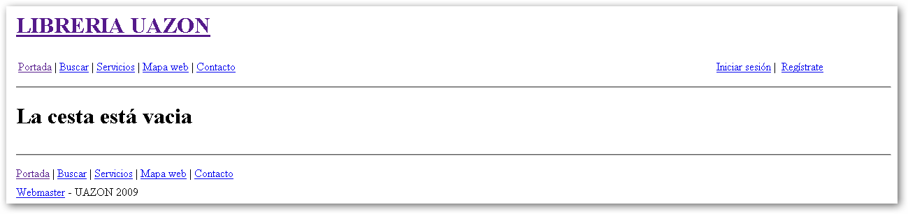
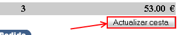
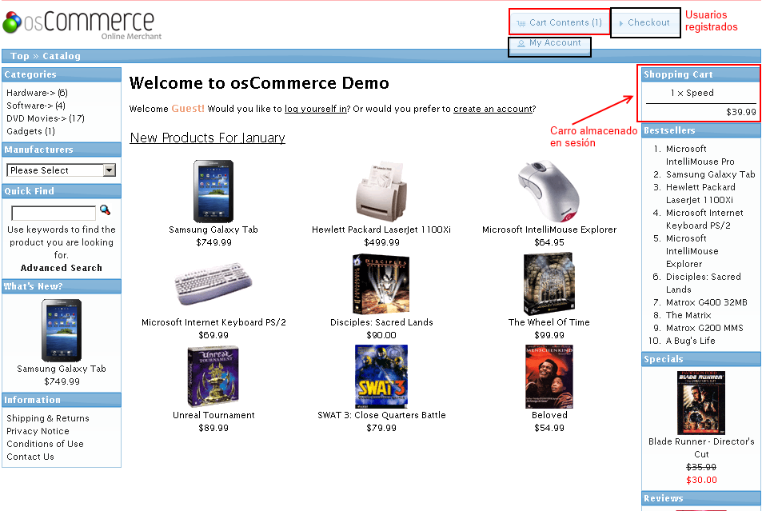
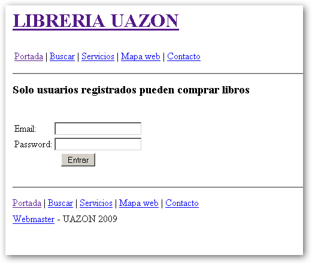
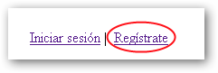
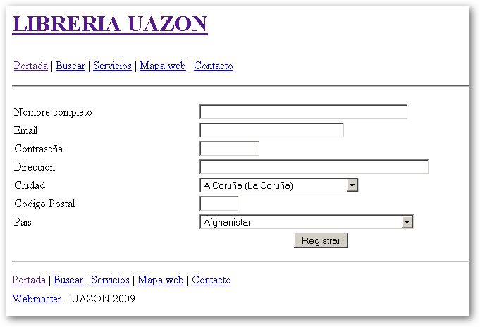
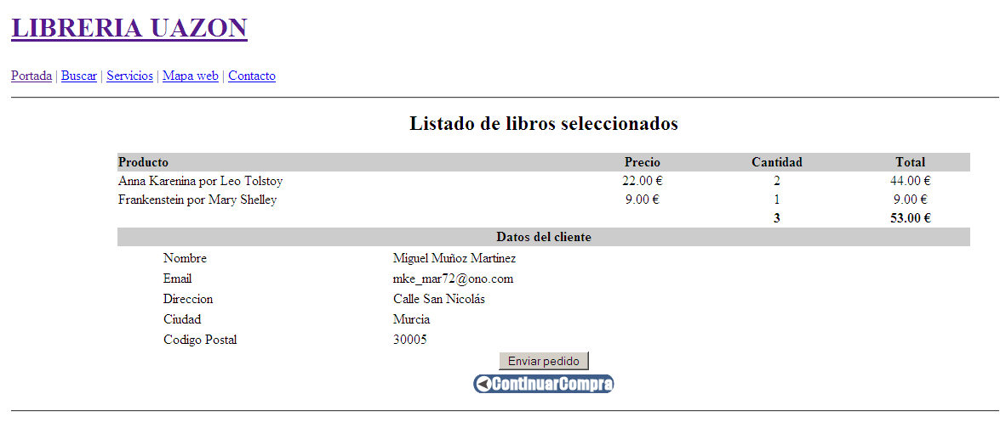
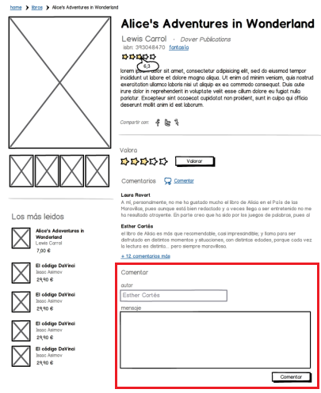

Ejercicios: Integración de un carro de la compra con CodeIgniter
Cesta
Resumen
Hay que realizar las siguientes páginas:
Ver cesta (ver)
Es donde el usuario visualizará los libros que ha introducido en su cesta de la compra. Si no hay libros, se debe mostrar un mensaje con que la cesta está vacía.
Veamos una captura de una cesta con dos libros de Anna Karenina y una libro de Frankenstein:

Si no hay libros:

Añadir un libro a la cesta (add)
El usuario podrá introducir libros en la cesta a través la URL (mediante GET) pasando un identificador de un libro. En la acción del controlador recogeremos el libro e invocaremos al método add del modelo Cesta_model.
Una vez introducido el libro haremos una redirección a 'cesta/ver'. Ejemplo:
redirect('cesta/ver', 'refresh');
Actualizar cesta (update)
Esta acción actualiza la cesta modificando la cantidad o eliminando libros de la misma si el usuario introduce un 0 en el campo cantidad. Esta acción se realiza cuando el usuario pulsa el botón de actualizar.

En la vista de visualización de la cesta tendremos algo así:
<form action="http://localhost/proyecto/index.php/cesta/update" method="post" >
...
<tr>
<td colspan="5" align="right">
<input name="update" type="submit" value="Actualizar cesta">
</td>
</tr>
...
</form>
Para actualizar la cesta el usuario debe pulsar el botón de "**Actualizar cesta**" el cual llamará a la acción "cesta/update" (el nombre del botón submit se llamará "update") mediante un formulario.
Una vez comprobado que el usuario ha pulsado invocaremos al método update del modelo Cesta_model. Posteriormente se realizará una redirección a 'cesta/ver'.
Y en el controlador tendremos algo parecido a esto:
public function update() {
//comprobar que el usuario ha pulsado
// el botón "update" de actualizar cesta
if ($this->input->post('update')) {
$this->cesta->update();
}
redirect('cesta/ver', 'refresh');
}
Otro detalle importante del formulario es que los cuadros de texto se llaman igual que el identificador del libro, de esa forma los podemos distinguir al recorrer el array superglobal $_POST. Por ejemplo, $_POST['3'] contendrá la cantidad de libros solicitados con identificador "3" ($_POST['3'] = 1).
Veamos el código PHP:
...
<input name="<?php echo $id ?>" type="text"
value="<?php echo $cantidad ?>" size="3">
...
Modelo (Cesta_model)
Crear el modelo **Cesta_model** (**cesta_model.php)** que implemente los siguientes métodos:
add($id)
Método que añade un libro a la cesta. La cesta consistirá en un array indexado el cual los índices serán los identificadores de los libros en la base de datos y su valor será la cantidad de los mismos. Por ejemplo:
$carro_session = array( '3' => 1 , '4' => 2);
echo $carro_session['3']; //1
Esto significa que hay un libro de **Oliver Twist** cuyo id vale 3 y dos libros de **Frankenstein** cuyo id vale 4. Total tendremos 3 items en la cesta (1+2) que hace un precio total de 35 € (17 de Oliver Twist + 18 (9\*2))
Esa es toda la información relacionada con la cesta que vamos a guardar en sesión: carro, items y total\_precio.
Dentro del método add del modelo Cesta_model, creamos un array $carro_session vacío. Comprobamos si existe el array carro en la sesión de CI, si no existe, guardamos la variable **items** con el valor '0' y **total_precio** con valor '0.00'.
Si existe el carro, guardamos el array carro en la variable $carro_session. Una vez tenemos el array $carro_session, comprobamos si ese identificador existe en el carro. Si existe, incrementamos en 1 la cantidad de libros. Sino existe, colocamos un 1 el índice del $carro_session.
Una vez actualizado o inicializado el array $carro_session lo guardamos en sesión con el nombre **carro**. Veamos un posible código de ejemplo:
public function add($id) {
$carro_session = array();
if (!$this->session->userdata('carro'))
{
$this->session->set_userdata('items', 0);
$this->session->set_userdata('total_precio','0.00');
}
else {
$carro_session = $this->session->userdata('carro');
}
//actualizamos el carro
if (isset($carro_session[$id])) {
$carro_session[$id]++;
}
else {
$carro_session[$id] = 1;
}
//lo guardamos en la sesión
$this->session->set_userdata('carro', $carro_session);
}
Debemos guardar una copia del carro almacenado en la sesión ($this->session->userdata('carro')) en un array $carro_session debido a que la librería session de CI no nos permite actualizar directamente tipos complejos como arrays u objetos.
update()
Método que actualiza la cesta modificando la cantidad o eliminando libros de la misma si el usuario introduce un 0 en el campo cantidad. Esta acción se realiza cuando el usuario pulsa el botón de actualizar.
Podemos utilizar el código siguiente:
public function update() {
if ($this->session->userdata('carro'))
{
$carro_session = $this->session->userdata('carro');
$this->load->library('form_validation');
foreach ($carro_session as $id => $cantidad)
{
if ($this->form_validation->integer($this->input->post($id)))
{
if ($this->input->post($id) == 0) {
unset($carro_session[$id]);
}
else
{
//Comprobamos que la cantidad es mayor que 0
if (intval($this->input->post($id)) > 0)
{
$carro_session[$id] = $this->input->post($id);
}
}
}
}
$this->session->set_userdata('carro', $carro_session);
}
}
Como vemos en el código anterior obtenemos el array carro de la sesión y si existe lo recorremos para actualizar cada campo de texto donde el usuario ha introducido algún valor. Si el mismo ha introducido un 0, ese índice se elimina del array $carro_session. Sino se obtiene ese valor del array $_POST (usando la librería input de CI y se actualiza la cantidad de ese libro en el array.
Una vez actualizado el array se guarda en la sesión con el nombre 'carro'.
getLibrosCarro()
Método que recorre el carro con los identificadores de los libros que hemos introducido en la cesta y los guarda en un array para mostrarlos en una vista.
Además actualiza el número de items y el precio total del pedido.
Veamos el posible código que podríamos utiilizar:
public function getLibrosCarro()
{
$librosCarro = array();
if (!$this->session->userdata('carro')) {
throw new InvalidArgumentException("La cesta está vacía");
}
$carro_session = $this->session->userdata('carro');
//debemos cargar el modelo Libros_model para obtener los datos
// de cada libro
$this->load->model('Libros_model');
$items = 0;
$total_precio = 0;
foreach($carro_session as $id => $cantidad) {
//actualizamos el número de items de la cesta
$items = $items + $cantidad;
$libro = $this->Libros_model->read($id);
if (!is_null($libro))
{
//cada índice con tiene los datos del libro
$librosCarro[$id] = $libro;
//calculammos el precio total de la cesta
$total_precio += ($cantidad * (float)$libro['precio']);
}
}
$this->session->set_userdata('total_precio', $total_precio );
$this->session->set_userdata('items', $items );
//devolvemos un array asociativo donde cada índice
// contiene los datos de un libro
return $librosCarro;
}
Si tuviéramos $carro_session = array( '3' => 1 , '4' => 2), sabemos que el índice '3' corresponde con el libro con id igual a 3 y que quiere 1 libro. Igual para el índice '4' que corresponde con el libro con id igual a 4 y que el usuario quiere 2 libros. Si a la hora de visualizar la cesta vamos a recorrer el array $carro_session. ¿Porque no metemos en el índice '3' de un array los datos del libro con id igual a 3? De esa forma sólo tendríamos que recorrer la cesta y obtener el libro en cuestión de esta forma:
...
<?php foreach($carro_session as $id => $cantidad): ?>
<?php $libro = $librosCarro[$id]; ?>
| <td><?php echo $libro['titulo']?>
por <?php echo $libro['autores']?></td>
<?php endforeach; ?>
...
Al recorrer el $carro_session en primera iteración, $id vale 3 y $cantidad 1. Obtenemos el $libro de **$librosCarro['3']** que será el de 'Oliver Twist'. Imprimimos toda su información, el input de cantidad valdrá 1 y su name '3', para hacer así más simple su actualización (si el usuario introdujera un 7 en cantidad, en el array tendremos esto $_POST['3'] = 7)
En la segunda iteración, $id vale 4 y $cantidad 2.
Obtenemos el $libro de **$librosCarro['4']** que será el de 'Frankenstein'. Imprimimos toda su
información, el input de cantidad valdrá 2 y su name '4', para hacer así más simple su actualización (si el usuario introdujera un 0 en cantidad, en el array tendremos esto $_POST['4'] = 0 y tendrá que ser borrado de la cesta)
Un detalle importante es que dentro del modelo Cesta_model necesitamos obtener los datos de un libro.
No es muy lógico copiar el método que tenemos en Libros_model ya que incumplimos el principio de reutilización por lo que lo único que tenemos que hacer es cargar el modelo de Libros tal y como lo hacíamos anteriormente en los modelos:
**$this->load->model('Libros_model');**
Una vez cargado, obtenemos los datos del libro con el método read($id):
**$libro = $this->Libros_model->read($id);**
Controlador
Crea el controlador **Cesta** (**cesta.php)** que extienda de MY_Controller. Hay que implementar las siguientes acciones:
add($id)
El usuario envía por la url (GET) un identificador de libro (su id), lo recogemos y convertimos a entero. Si $id no es mayor que cero, lanzamos una excepción con el mensaje "No has especificado un identificador de libro correcto.". En el bloque catch usaremos por ejemplo este código: show_error($e->getMessage()), para mostrar un mensaje amigable al usuario
Si el id del libro es correcto, invocamos al método add del modelo cesta pasando el identificador de libro.
Una vez ejecutado la acción de añadir el libro a la cesta hay que hacer una redirección a la accion ver del controlador Cesta. Por ejemplo con: redirect('cesta/ver', 'refresh')
Recuerda añadir en la ficha de visualización de los datos del libro el botón "Comprar" que ejecute la acción:"cesta/add/" . $id
'$id' contendrá el identificador del libro.
update()
Esta acción actualiza la cesta modificando la cantidad o eliminando libros de la misma si el usuario introduce un 0 en el campo cantidad. Esta acción se realiza cuando el usuario pulsa el botón de actualizar.
Una vez ejecutado la acción de añadir el libro a la cesta hay que hacer una redirección a la accion ver del controlador Cesta. Por ejemplo con: redirect('cesta/ver', 'refresh')
ver()
Esta acción visualiza el carro el usuario ha guardado en sesión.
public function ver()
{
$carro_session = array();
$items = 0;
$total_precio = '0.00';
if ($this->session->userdata('carro'))
{
$carro_session = $this->session->userdata('carro');
if (count($carro_session)>0)
{
$this->data['librosCarro'] = $this->cesta->getLibrosCarro();
$items = $this->session->userdata('items');
$total_precio = $this->session->userdata('total_precio');
}
$this->data['items'] = $items;
$this->data['total_precio'] = $total_precio;
}
$this->data['carro_session'] = $carro_session;
}
Vista: ver
Crea una carpeta **cesta** y dentro introduce la única vista que hay que realizar para la cesta: ver.php
Puedes usar este código de ejemplo:
<?php if (count($carro_session) > 0): ?>
<h1>Tu cesta de la compra</h1>
<?php echo form_open("cesta/update")?>
<table border="0" width="100%" cellspacing="0">
<tr bgcolor="#cccccc" align="center">
<th width="5%"> </th>
<th width="50%" align="left">Item</th>
<th width="10%">Precio</th>
<th width="15%">Cantidad</th>
<th width="15%" align="right">Total</th>
</tr>
<?php foreach($carro_session as $id => $cantidad): ?>
<?php $libro = $librosCarro[$id]; ?>
<tr>
<td>
<img
src="<?php echo base_url()?>/imagenes/<?php echo $libro['id']?>/thumb_<?php echo $libro['id']?>.jpg"
height="40" width="40">
</td>
<td><?php echo $libro['titulo']?> por <?php echo $libro['autores']?></td>
<td align="center"><?php echo $libro['precio']?> €</td>
<td align="center">
<input name="<?php echo $id?>" type="text" value="<?php echo $cantidad ?>" size="3">
</td>
<td align="right">
<?php echo number_format($cantidad * $libro['precio'],2)?> €
</td>
</tr>
<?php endforeach ?>
<tr>
<td colspan="2"></td>
</tr>
<tr bgcolor="#cccccc" align="center">
<th colspan="3"></th>
<th width="15%"><strong><?php echo $items?></strong></th>
<th width="15%" align="right">
<strong><?php echo $total_precio ?></strong> €</th>
</tr>
<tr>
<td colspan="5" align="right">
<?php echo form_submit('update', 'Actualizar cesta');?>
</td>
</tr>
<tr>
<td colspan="2" align="center">
<?php echo anchor('libros','<img src="'. base_url() .'images/button_continue_shopping.gif" border="0">')?>
</td>
<td colspan="2" align="center">
<?php echo anchor('pedidos/ver/','<img src="'.base_url().'/images/button_checkout.gif" border="0">')?>
</td>
</tr>
</table>
<?php form_close()?>
<?php else: ?>
<h1>La cesta está vacia</h1>
<?php endif ?>
Página principal con el carro de la compra a la derecha
Una vez integrada la posibilidad de guardar libros en sesión, modificar la acción index() del controlador libros para mostrar el carro de la compra en la página principal. Se debe mostrar en la esquina superior derecha.
En la siguiente figura podemos ver un ejemplo:

En el recuadro rojo vemos la información del carro actual. Si seguimos añadiendo productos al carro, la información se mantendrá. Si estando en la página de la cesta pinchamos en el enlace "Realizar pedido" nos mostrará una pantalla donde nos pedirá que nos registremos si no somos usuarios registrados o que nos autentiquemos si somos usuarios registrados.
(OPTATIVO) Pedidos
Resumen
A todas las páginas/acciones sólo pueden acceder usuarios registrados y además la cesta debe contener algún valor.
Hay que realizar las siguiente páginas:
Ver pedido (ver)
Cuando un usuario accede a esta página, lo que haremos será comprobar si existe el usuario en la sesión y si no es así lo redirigimos a la página de login.
En la siguiente figura podemos ver un ejemplo para usuarios no registrados.

Si el usuario no está registrado podrá registrarse accediendo a la página de registro del menú superior. En la siguiente imagen se muestran los enlaces para iniciar sesión y registrarse.


Si el usuario ya existía en la sesión o se ha registrado siguiendo los pasos anteriores, se le mostrarán los datos del carro de la compra y sus datos personales. Ninguno de los datos serán editables, tan sólo se podrán confirmar el pedido (Enviar pedido) o continuar con la compra, que llevará al usuario a la página principal.
Para usuarios registrados y existiendo datos del carro en la sesión, mostraría lo siguiente:

Confirmar pedido
Página para confirmar que el pedido se ha insertado correctamente y que además se ha enviado un correo de confirmación al administrador y a la cuenta del usuario.
Ojo, si el pedido se ha realizado correctamente, se borrarán las variables carro, items y total_precio de la sesión.
Modelo (Pedidos_model)
Crear el modelo Pedidos_model (pedidos_model.php) que implemente los siguientes métodos:
create
SQL que, mediante transacciones, inserta el pedido del usuario tal y como lo hemos realizado en ejercicios anteriores.
En algún momento del código vamos a necesitar datos del precio del libro por lo que sería interesante cargar el modelo Libros_model para obtener el precio de dicho libro. También sería recomendable crear un método en Libros_model que nos devuelva solamente el precio del libro, por ejemplo, $this->Libros_model->getPrecio($id). Mucho más rápido y eficaz que devolver un libro con todos sus datos, incluido autores, del que solamente vamos a necesitar el precio.
Insertar el pedido en la tabla pedidos según el total del pedido (total_precio de la sesion), la fecha actual (date de PHP) y el identificador del usuario (almacenado en sesion).
Obtener el último id insertado que será el que guardemos en la tabla libros_pedidos en fk_pedidos.
Obtener el carro de la sesión ($carro_session) y cargar el modelo Libros_model ya que necesitamos el precio de cada libro que tengamos en el carro.
En cada iteración donde recorremos el carro con $id y $cantidad, obtenemos el precio del libro y creamos un array $linea_libros_pedidos con el identificador del libro, el identificador del pedido, la cantidad de libros solicitada y el precio de ese libro. Finalmente insertamos dicha línea de pedidos con el método insert de la librería Database.
Si no ha habido ningún error hacemos commit. Si lo ha habido hacemos rollback. Todo el código debería estar envuelto en un bloque try-catch.
Ejemplo de código para recorrer el carro de la sesión e ir insertando línea a línea:
public function create()
{
...
foreach($carro_session as $id => $cantidad)
{
$precio = $this->Libros_model->getPrecio($id);
$linea_libros_pedidos =
array
(
"fk_libros" => $id,
"fk_pedidos" => $pedido_id,
"cantidad" => $cantidad,
"precio" => $precio
);
$this->db->insert('libros_pedidos', $linea_libros_pedidos);
}
...
}
Controlador
Crear el controlador Pedidos (pedidos.php) que extienda de MY_Controller. Para asegurarnos que sólo pueden acceder usuarios registrados en todas la acciones de este controlador se debería realizar esa comprobación en el constructor de Pedidos (tendrás que reemplazar dicho constructor llamando al del padre primeramente y luego introduciendo el código correspondiente). Si el usuario no está logueado, redirigirlo a la página de login/registro.
Habrá que implementar la siguientes acciones:
index()
Redirigir al usuario a la accion 'cesta/ver';
ver()
Mostrar los datos del pedido junto con los datos del usuario en modo lectura.
Habrá que pasar la siguiente información a la vista:
El array librosCarro del modelo Cesta_model que contiene los datos de los libros que el usuario ha insertado en el carro.
Las variables: carro, items y total_precio.
La variable usuario con la información del mismo.
confirmar()
Acción que comprueba si existe el carro en la sesión y posteriormente llama al método **create** de Pedidos_model. Si todo ha funcionado correctamente se borrarán las variables carro, items y total_precio de la sesión.
Si todo se ha insertado correctamente, enviar un correo electrónico al usuario con la informaición del pedido y otra al administrador de la web para avisarle que ha habido un nuevo pedido junto con los datos del mismo.
Vistas
Crea una carpeta pedidos en views y dentro las vistas siguientes: ver.php y confirmar.php
(OPTATIVO) Comentar un libro (solo para usuarios registrados)
En la ficha del libro, justo después de ver los datos del mismo y de los comentarios validados de los usuarios registrado, se mostrará un formulario para comentar el libro. El formulario sólo estará activo si el usuario está logueado.

Si el usuario no está logueado se mostrará un mensaje para registrarte o hacer login en la aplicación.
Si el usuario se autentica en la aplicación se "debería" redigir a la página anterior. Esa opción se deja como optativa y se explica en una sección posterior, por lo que podemos redirigir al usuario a la página principal.
Por defecto el comentario se insertará como no validado (valor "0" en el campo **validado**) y será el administrador el que lo valide.
Si el comentario se ha insertado correctamente se mostrará un mensaje avisando al usuario que el comentario será visible cuando el administrador lo valide.
Tendrás que realizar las siguientes acciones:
Modelo
Crear el modelo Comentarios_model (comentarios_model.php) que implemente el siguiente método:
create($comentario)
Método que recibe un array con la datos necesarios para insertar el comentario en la tabla comentarios de la base de datos.
Modificar el controlador de libros: añadir la acción comentar()
Agregar la acción **comentar()** al controlador de libros.
Debe comprobar primeramente si el usuario está logueado. Si no lo está, mostrar un enlace a la página de registro o login. Si lo está, debemos comprobar que el usuario ha pulsado el botón de submit del formulario. Si es así, se encargará de recoger el comentario del formulario y crear un array con la datos necesarios para insertar dicho comentario en la tabla comentarios de la base de datos. Ese array será enviado al método **create** del modelo Comentarios_model.
Si el comentario se ha insertado correctemante, guardar una variable flash_data 'comentario_insertado' con el mensaje de que se ha insertado el comentario correctamente. Posteriormente redirigir al usuario a la página de la ficha del libro que estaba visualizando.
Modificar la vista que visualiza los datos un libro (ver.php)
Si el usuario está logueado, mostrar el formulario para comentar el libro. Si no lo está, mostrar un enlace a la página de registro o login.
Si existe la variable flash_data 'comentario_insertado', mostrar el mensaje que contiene (comprueba recargando la página que efectivamente, si volvemos a acceder a la misma página, la variable no está en sesión)
(OPTATIVO) Guardar última acción del usuario
Como se ha comentado anteriormente, si un usuario no logueado intenta visualizar su pedido guardado, lo reenviaremos a la página de registro/login. Si posteriormente se autentica correctamente en nuestra aplicación ¿donde lo redirigimos? ¿A la página de inicio? Lo ideal sería guardar en una variable de sesión, por ejemplo, **last_action** la última acción del usuario y una vez haya iniciado sesión, redirigirlo al contenido de dicha variable.
Veámoslo más claro con un ejemplo:
Un usuario no logueado ha introducido libros en el carro de la compra y pincha en ver pedido. Al no estar logueado la aplicación lo redige a la página de login/registro de usuario.
Dentro del controlador Pedidos, en la acción ver, podríamos tener el siguiente código PHP:
...
if (!$this->session->userdata('usuario_valido')) {
$this->session->set_userdata('last_action', current_url());
$this->session->set_flashdata('mensaje',
'Solo usuarios registrados pueden comprar libros');
redirect('usuarios/loginform');
}
...
Como vemos en el código PHP anterior, si no existe la variable "**usuario_valido**" en la sesión la página nos redirige al formulario de login/registro pero antes de ello se guarda en una variable de sesión la última acción realizada por el usuario, la cual es "ver el pedido (proyecto/pedidos/ver)".
Dentro de la acción de login (usuarios/loginform) tendríamos un código donde mostrar el mensaje que hemos almacenado en la página anterior. Sería algo así:
Por último faltaría el código que realiza la redirección en caso de que el usuario se autentique en la aplicación. Sería el siguiente:
...
//una vez comprobado que el usuario se ha autenticado correctamente
$redirect = 'libros';
if ($this->session->userdata('last_action'))
{
$redirect = $this->session->userdata('last_action');
$this->session->unset_userdata('last_action');
}
redirect($redirect, 'refresh');
...
(OPTATIVO) Ocultar el fichero index.php de la URL
En este ejercicio guiado vamos a ocultar el index.php de la URL utilizando un fichero **.htaccess ** de Apache en el directorio raíz del proyecto. Aquí tenemos un ejemplo:
RewriteEngine on
RewriteCond $1 !ˆ(index\.php|images|css|imagenes|js|robots\.txt)
RewriteRule ˆ(.*)$ /proyecto/index.php/$1 [L]
Veamos línea a línea que es lo que significa:
RewriteEngine on
Activamos el mod_rewrite el cual tiene que estar activado previamente en Apache. Más adelante veremos como se activa.
RewriteCond $1 !ˆ(index\.php|images|css|imagenes|js|robots\.txt)
Escribimos una condición la cual TODO, a excepción de **index.php**, las carpetas: **imagenes**, **images**,**css**, **js** y el archivo **robots.txt** será redirigido siguiendo una regla. Podemos agregar cuantas más reglas necesitemos.
RewriteRule ˆ(.*)$ /proyecto/index.php/$1 [L]
Con esta regla todo lo que no esté contenido en la condición anterior será redirigido al fichero index.php que es lo que pretendemos.
Para activar el mod_rewrite en Apache tenemos que ir al fichero httpd.conf de Apache (C:\wamp\bin\apache\Apache2.2.22\conf) y buscar:
#LoadModule proxy_ftp_module modules/mod_proxy_ftp.so
#LoadModule proxy_http_module modules/mod_proxy_http.so
#LoadModule rewrite_module modules/mod_rewrite.so
Estará desactivado (el # indica que es comentario) por lo que quitamos dicho #. Quedará tal que así:
#LoadModule proxy_http_module modules/mod_proxy_http.so
LoadModule rewrite_module modules/mod_rewrite.so
LoadModule setenvif_module modules/mod_setenvif.so
Guardamos y recargamos Apache.
Por último tenemos que ir al fichero **config.php** y modificar la clave de configuración dejándola en blanco tal y como nos recomiendan en el manual de CodeIgniter. Esta es la configuración por defecto:
/*
|
| Index File
|
|
| Typically this will be your index.php file, unless you've renamed it to
| something else. If you are using mod_rewrite to remove the page set this | variable so that it is blank.
|
*/
$config['index_page'] = "index.php";
Tenemos que dejarlo en blanco para que funcione
$config['index_page'] = "";
De esta forma ya podemos acceder a cualquer ruta sin especficiar el index.php, por ejemplo:
**http://localhost/proyecto/** o **http://localhost/proyecto/libros/ver/1**